THEATRE PLAYS
| Abigail's Party
Year: 1977 Language: EN Format: mp4 Resolution: 480p Cast: Alison Steadman, Tim Stern, Janine Duvitski, John Salthouse, Harriet Reynolds Notes: |
| 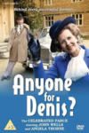 | Anyone for Denis
Year: 1982 Language: EN Format: mp4 Resolution: 720p Cast: John Wells, Angela Thorne, Joan Sanderson, Roy Kinnear, John Nettleton - Alfred Molina, Terence Rigby, Robert Stephens, Nicky Henson, Mark Kingston Notes: |
| Arsenic & Old Lace
Year: 1962 Language: EN Format: mp4 Resolution: SD Cast: Tony Randall, Boris Karloff, Dorothy Stickney, Mildred Natwick, Tom Bosley - George Voskovec, Farrell Pelly, Dort Clark, Nathaniel Frey, Dodie Heath, Alan MacAteer, Ralph Dunn, Edward F. Cullen Notes: |
| Arsenic and Old Lace
Year: 1969 Language: EN Format: mp4 Resolution: SD Cast: Helen Hayes, Bob Crane, Lillian Gish, Fred Gwynne, Sue Lyon, Bob Dishy, Jack Gilford, David Wayne, Billy De Wolfe, Richard Deacon, Frank Campanella, Victor Kilian, Bill Smillie Notes: |
| Beautiful Thing
Year: 2013 Language: EN Format: mp4 Resolution: 720p Cast: Jake Davies, Danny-Boy Hatchard, Suranne Jones, Zaraah Abrahams, Oliver Farnworth Notes: |
 |
Blithe Spirit
Year: 1956 Language: EN Format: mp4 Resolution: SD Cast: Noël Coward, Lauren Bacall, Claudette Colbert, Mildred Natwick, Brenda Forbes, Marion Ross, Philip Tonge Notes: |
| Blithe Spirit
Year: 1964 Language: EN Format: mp4 Resolution: SD Cast: Helen Cherry, Griffith Jones, Hattie Jacques, Joanna Dunham, Ursula Hirst, Edward Jewesbury, Coral Fairwehther Notes: |
| Blithe Spirit
Year: 1966 Language: EN Format: mp4 Resolution: SD Cast: Dirk Bogarde, Rosemary Harris, Rachel Roberts, Ruth Gordon, Mildred Trares, Joan White, Geoffrey Lumb Notes: |
| La Cage aux folles
Year: 1973 Language: EN Format: mp4 Resolution: SD Cast: Michel Serrault, Jean Poiret, Philippe Lavot, Benny Luke, Jacqueline Mille, Danièle Luger, Marcelle Ranson-Hervé, Marco Perrin, Paul Demange, Maurice Bray, Jean-Claude Robbe, Frédéric Norbert, Pierre Decazes, Yves Llobregat Notes: |
| 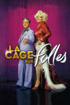 | La Cage aux folles
Year: 2011 Language: EN Format: mp4 Resolution: 480p Cast: Christian Clavier, Didier Bourdon, Thomas Sagols, Manoëlle Gaillard, Daniel-Jean Colloredo, Thierry Laurion - Héléna Grouchka, Marie-Hélène Lentini - Christian Pereira, Philippe Beglia, Philippe Gruz, Jean-Marc Coudert Notes: |
| 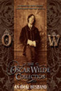 | An Ideal Husband
Year: 1969 Language: EN Format: mp4 Resolution: 576p Cast: Keith Michell, Margaret Leighton, Jeremy Brett, Dinah Sheridan, Susan Hampshire, Charles Carson Notes: |
| The Importance of Being Earnest
Year: 1974 Language: EN Format: mp4 Resolution: 720p Cast: Coral Browne, Michael Jayston, Julian Holloway, Gemma Jones, Celia Bannerman - Lally Bowers, Richard Pearson, Douglas Milvain, Arthur Hewlett Notes: |
| The Importance of Being Earnest
Year: 1981 Language: EN Format: mp4 Resolution: SD Cast: Gary Bond, Jeremy Clyde, Wendy Hiller Notes: |
| The Importance of Being Earnest
Year: 1986 Language: EN Format: mp4 Resolution: 720p Cast: Paul McGann, Rupert Frazer, Joan Plowright, Amanda Redman, Gemma Jones - Natalie Ogle, John Woodnutt, Alec McCowen, John Quarmby, Peter Copley Notes: |
| 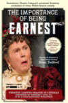 | The Importance of Being Earnest
Year: 2011 Language: EN Format: mp4 Resolution: 1080p Cast: Brian Bedford, Santino Fontana, David Furr, Sara Topham, Charlotte Parry Notes: |
| 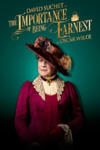 | The Importance of Being Earnest
Year: 2015 Language: EN Format: mp4 Resolution: 1080p Cast: David Suchet, Michael Benz, Philip Cumbus, Imogen Doel, Michele Dotrice, Brendan Hooper, David Killick, Richard O'Callaghan, Emily Barber Notes: |
| 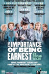 | The Importance of Being Earnest
Year: 2018 Language: EN Format: mp4 Resolution: SD Cast: Sophie Thompson, Fiona Button, Jeremy Swift, Fehinti Balogun, Jacob Fortune- Lloyd, Stella Gonet, Pippa Nixon Notes: |
| The Importance of Being Earnest
Year: 2020 Language: EN Format: mp4 Resolution: 1080p Cast: Cathy Tyson, Sharan Phull, Edward Franklin, Fela Lufadeju, Angela Clerkin, Dominic Gately, Darren Bennett, Martha Mackintosh Notes: |
| Lady Windermere's Fan
Year: 1985 Language: EN Format: mp4 Resolution: 576p Cast: Helena Little, Tim Woodward, Kenneth Cranham, Robert Lang, Diana Fairfax, Geoff Morrell Notes: |
| 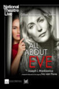 | National Theatre Live: All About Eve
Year: 2019 Language: EN Format: mp4 Resolution: 1080p Cast: Gillian Anderson, Lily James, Monica Dolan, Ian Drysdale, Tsion Habte, Jessie Mei Li, Julian Ovenden, Sheila Reid, Rhashan Stone, Stanley Townsend - Philip Voyzey Notes: |
| 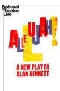 | National Theatre Live: Allelujah!
Year: 2018 Language: EN Format: mp4 Resolution: 720p Cast: Sacha Dhawan, Samuel Barnett, Deborah Findlay, Julia Foster, Jacqueline Clarke, Jacqueline Chan, Sam Bond, Peter Forbes, Rosie Ede, Patricia England, David Moorst, Anna Lindup, Louis Mahoney, Nadine Higgin, Nicola Hughes, Richie Hart, Manish Gandhi, Jeff Rawle, Cleo Sylvestre, Gwen Taylor, Sue Wallace, Simon Williams, Duncan Wisbey, Gary Wood, Colin Haigh Notes: |
| National Theatre Live: Amadeus
Year: 2017 Language: EN Format: mp4 Resolution: 1080p Cast: Lucian Msamati, Adam Gillen, Karla Crome, Sarah Amankwah, Hammed Animashaun, Tom Edden, Alexandra Mathie, Hugh Sachs, Geoffrey Beevers, Fleur de Bray, Wendy Dawn Thompson, Peter Willcock, Eamonn Mulhall, Andrew MacBean, Everal Walsh, Nicholas Gerard-Martin, Matt Hargreaves, Michael Lyle, Robyn Allegra Parton, Eleanor Sutton Notes: |
| 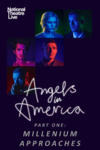 | National Theatre Live: Angels In America — Part One: Millennium Approaches
Year: 2017 Language: EN Format: mp4 Resolution: 1080p Cast: Andrew Garfield, Nathan Lane, Susan Brown, Denise Gough, Amanda Lawrence, James McArdle, Nathan Stewart-Jarrett, Russell Tovey, Stuart Angell, Laura Caldow, Claire Lambert, Becky Namgauds - Stan West, Lewis Wilkins Notes: |
| National Theatre Live: Angels In America — Part Two: Perestroika
Year: 2017 Language: EN Format: mp4 Resolution: 720p Cast: Andrew Garfield, Nathan Lane, Susan Brown, Denise Gough, Amanda Lawrence, James McArdle, Nathan Stewart-Jarrett, Russell Tovey, Stuart Angell, Laura Caldow, Claire Lambert, Becky Namgauds - Stan West, Lewis Wilkins Notes: |
| National Theatre Live: East is East
Year: 2021 Language: EN Format: mp4 Resolution: 1080p Cast: Amy-Leigh Hickman, Irvine Iqbal, Tony Jayawardena, Adonis Jeneico, Noah Manzoor, Joeravar Sangha, Gurjeet Singh, Sophie Stanton, Assad Zaman Notes: |
 |
National Theatre Live: Frankenstein
Year: 2011 Language: EN Format: mp4 Resolution: 1080p Cast: Benedict Cumberbatch, Jonny Lee Miller - Ella Smith, Naomie Harris, George Harris, Karl Johnson, Daniel Millar, Lizzie Winkler, Andreea Păduraru, Daniel Ings, Martin Chamberlain Notes: |
| National Theatre Live: Frankenstein
Year: 2011 Language: EN Format: mp4 Resolution: 1080p Cast: Benedict Cumberbatch, Jonny Lee Miller - Ella Smith, Naomie Harris, George Harris, Karl Johnson, Daniel Millar, Lizzie Winkler, Andreea Păduraru, Daniel Ings, Martin Chamberlain Notes: |
| National Theatre Live: Jack Absolute Flies Again
Year: 2022 Language: EN Format: mp4 Resolution: 1080p Cast: Laurie Davidson, Natalie Simpson, Caroline Quentin, Peter Forbes, Helena Wilson, Jordan Metcalfe, Kerry Howard - James Corrigan, Kelvin Fletcher, Akshay Sharan, Tim Steed, Theo Cowen, Shailan Gohil Notes: |
| 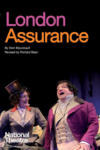 | National Theatre Live: London Assurance
Year: 2010 Language: EN Format: mp4 Resolution: 1080p Cast: Paul Ready, Matt Cross, Simon Russell Beale, Mark Addy, Fiona Shaw, Richard Briers, Junix Inocian, Prasanna Puwanarajah, Nick Sampson, Richard Frame, Maggie Service, Simon Markey, Michelle Terry Notes: |
| National Theatre Live: Nye
Year: 2024 Language: EN Format: mp4 Resolution: 1080p Cast: Michael Sheen, Sharon Small, Remy Beasley, Jon Furlong, Roger Evans, Oliver Llewellyn Jenkins, Rhodri Meilir, Tony Jayawardena, Kezrena James, Dyfan Dwyfor, Matthew Bulgo, Ross Foley, Daniel Hawksford, Beau Holland, Stephanie Jacob, Michael Keane, Nicholas Khan, Rebecca Killick, Mark Matthews, Ashley Mejr, Lee Mengo, David Montieth, Sara Otung, Mali O'Donnell |
| 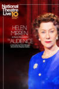 | National Theatre Live: The Audience
Year: 2013 Language: EN Format: mp4 Resolution: 1080p Cast: Helen Mirren, Michael Elwyn, Haydn Gwynne, Richard McCabe, Nathaniel Parker, Paul Ritter, Rufus Wright, Edward Fox, David Peart, Geoffrey Beevers, Nell Williams, Charlotte Moore, Harry Feltham, Matt Plumb, Spencer Kitchen, Elaine Solomon, Jonathan Coote, Ian Houghton Notes: |
| 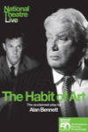 | National Theatre Live: The Habit of Art
Year: 2010 Language: EN Format: mp4 Resolution: 1080p Cast: Richard Griffiths, Alex Jennings, Frances de la Tour, Stephen Wight, Philip Childs, Elliot Levey, John Heffernan, Barbara Kirby, Martin Chamberlain, Laurence Belcher, Adrian Scarborough, Tom Attwood Notes: |
| National Theatre Live: Under Milk Wood
Year: 2021 Language: EN Format: mp4 Resolution: 1080p Cast: Michael Sheen, Karl Johnson, Susan Brown, Ifan Huw Dafydd, Alan David, Gillian Elisa, Michael Elwyn, Kezrena James, Andrew MacBean, Lee Mengo, Anthony O'Donnell, Siân Phillips, Gaynor Morgan Rees, Cleo Sylvestre Notes: |
| 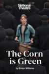 | National Theatre: The Corn Is Green
Year: 2022 Language: EN Format: mp4 Resolution: 1080p Cast: Nicola Walker, Adam Baker, Saffron Coomber, Gareth David-Lloyd, Iwan Davies, Sion Emlyn, Ben Francis, Gwion Glyn, Megan Grech, Matthew Hargreaves, Jonathan Hawkins, Steffan Hughes, John Ieuan Jones, Gareth Kennerley, Richard Lynch, Jo McInnes, Kristian Morse, Tomás Moya, Alice Orr- Ewing, Debra Penny, Steffan Rizzi, Rebecca Todd, Peter Willcock, Garyn Williams, Rufus Wright Notes: |
| Piaf
Year: 1984 Language: EN Format: mp4 Resolution: 576p Cast: Jane Lapotaire, Zoë Wanamaker, Judith Ivey, David Leary, Robert Christian, Peter Friedman, Jean Smart Notes: |
| The Picture of Dorian Gray
Year: 1976 Language: EN Format: mp4 Resolution: 576p Cast: John Gielgud, Peter Firth, Jeremy Brett, Judi Bowker, Gwen Ffrangcon Davies, Nan Munro, Mark Dignam, Michael Barrington, Gillian Raine, Nicholas Ball, Nicholas Clay Notes: |
| 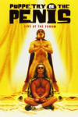 | Puppetry of the Penis: Live at the Forum
Year: 2001 Language: EN Format: mp4 Resolution: 576p Cast: Simon Morley, David Friend Notes: |
| Sinderella Live
Year: 1995 Language: EN Format: mp4 Resolution: 480p Cast: Jim Davidson, Charlie Drake, Jess Conrad, Dianne Lee, Roger Kitter, Dave Lee, Dave Kristian, Mia Carla Notes: |
| What the Butler Saw
Year: 1987 Language: EN Format: mp4 Resolution: 480p Cast: Tyler Butterworth, Dinsdale Landen, Tessa Peake-Jones, Bryan Pringle, Prunella Scales, Timothy West Notes: |
| 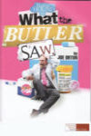 | What The Butler Saw
Year: 2020 Language: EN Format: mp4 Resolution: 720p Cast: Rufus Hound, Dakota Blue Richards, Catherine Russell, Ravi Aujla, Jasper Britton, Jack Holden Notes: |